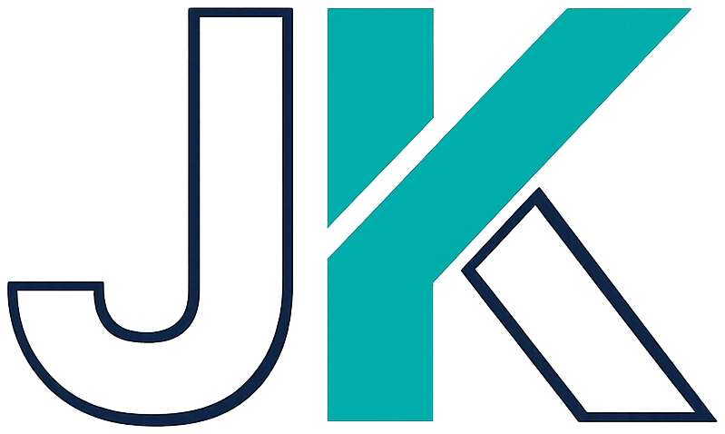
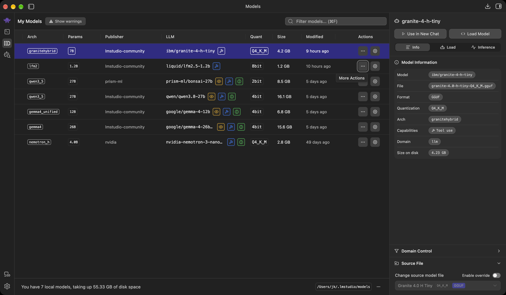

Global AI Construct · Brisbane
Small Models, Sharp Jobs.
Build a local agent with Microsoft Agent Framework.

Builder / Speaker / Community contributor
Jernej Kavka (JK)
Agentic AI, Azure AI, coding-agent workflows, .NET and local models that have to survive a bad Wi-Fi night.
Microsoft AI MVP
@SSWConsulting
Brisbane, Australia
What we build tonight
A crash-review agent that runs on your laptop.
Gather
Extract
Validate
Analyse
C#GatherFilter 24 Victorian crash records by term, date and cap.
ModelExtractPick the record IDs that answer the question.
C#ValidateReject unknown IDs, duplicates and low confidence.
ModelAnalyseSummarise the validated records: finding, actions and open questions.
Local models
LM Studio
Download open-weight models, load one, serve it on http://localhost:1234/v1.

Local models
LM Studio from the terminal
lms get nvidia/nemotron-3-nano-4b # download
lms load nvidia-nemotron-3-nano-4b -c 16384 # load with a 16k context
lms server start # http://localhost:1234/v1
lms ps # what is loaded right now
Gotcha whatever is loaded is what answers — LM Studio ignores the model name in the request.
Local models
Ollama
CLI-first. Same API shape, on http://localhost:11434/v1.
ollama pull nemotron-3-nano:4b
ollama run nemotron-3-nano:4b "Say hello in five words"
ollama ps
Here the model name in the request decides what answers. Same C# either way — only endpoint and name change.
Local models
Which model, and why.
ModelSizeExtract + AnalyseNote
Nemotron 3 Nano 4B2.8 GB~5 stonight's model; verify with ready
Gemma 4 26B-A4B15.6 GB~5 sas fast, needs ~16 GB free
Qwen 3.8 27B16 GB~20 scorrect, slow
LFM2.5 1.2B1.25 GB~2 sfastest; findings read like instructions
Get started
Clone and build
git clone https://github.com/jernejk/small-models-sharp-jobs
cd small-models-sharp-jobs/starter
dotnet build
dotnet test # green already — that is the baseline, not the finish line
starter/Your workspaceTwo TODOs in src/Workshop.App/CrashPipeline.cs — search for TODO 4. Everything else already runs.
../solution/The finished versionFall behind? Copy one file across and keep going.
Done means run --term intersection exits 0 with gate: Supported.
Get started
Point it at your model
Two settings, stored with dotnet user-secrets so nothing lands in git.
# LM Studio
dotnet user-secrets set MAF_ENDPOINT http://localhost:1234/v1 --project src/Workshop.App
dotnet user-secrets set MAF_MODEL nvidia-nemotron-3-nano-4b --project src/Workshop.App
# Ollama
dotnet user-secrets set MAF_ENDPOINT http://localhost:11434/v1 --project src/Workshop.App
dotnet user-secrets set MAF_MODEL nemotron-3-nano:4b --project src/Workshop.App
Set nothing and you get Ollama. MAF_API_KEY only when your server wants one. Shell variables override secrets; secrets override .env.
Get started
Your first call
var client = new OpenAIClient(
new ApiKeyCredential(settings.ApiKey),
new OpenAIClientOptions { Endpoint = new Uri(settings.Endpoint) })
.GetChatClient(settings.Model)
.AsIChatClient();
AIAgent agent = client.AsAIAgent(
instructions: "Reply with exactly the token you are given.",
name: "HelloAgent");
var response = await agent.RunAsync("Reply with exactly this token: WORKSHOP_OK");
Console.WriteLine(response.Text); // WORKSHOP_OK
OpenAIClientAny OpenAI-compatible serverLocal or hosted — same client.
AsAIAgentChat client → agentInstructions and a name. Tools come later.
RunAsyncOne turnText in, text back.
Get started
Run it
$ dotnet run --project src/Workshop.App -- smoke
local hello | LOCAL | endpoint=http://localhost:1234/v1 | model=nvidia-nemotron-3-nano-4b
reply: WORKSHOP_OK
elapsed: 258 ms
No reply? lms ps or ollama ps — is the model loaded, and is the port the one in your secrets?
Talking to a model
Three ways to call a model
1 · ChatText in, text out
Your code has to interpret the answer.
await agent.RunAsync("…");
2 · Tool callThe model asks code to run a function
Only registered C# can run. The result goes back to the model.
tools: [AIFunctionFactory.Create(Gather)]
3 · Structured outputJSON shaped like a C# type
Code parses it, then validates it.
await agent.RunAsync<CrashSelection>("…");
Tonight's lab uses 1 and 3. You will see why 2 stays on the slide.
Talking to a model
Tool calls
[Description("Search the approved crash sample.")]
static EvidencePack Gather(string term, int max)
=> IncidentDataset.Gather(records, new(null, null, term, max));
AIAgent agent = chat.AsAIAgent(
instructions: "Use only the Gather tool. Never guess records.",
name: "GatherAgent",
tools: [AIFunctionFactory.Create(Gather)]);
var response = await agent.RunAsync("Find crashes involving an intersection.");
ModelPicks the functionName and arguments, from the description and signature.
FrameworkRuns the C#Hands the result back; the model continues.
TonightNo tools on the 4BTool and JSON output in one call: the 4B answers with JSON and never calls the tool. So code gathers.
Talking to a model
Structured output
record TypedGreeting(string Greeting, int Confidence);
var response = await agent.RunAsync<TypedGreeting>("Greet the room.");
try { return response.Result; }
catch (Exception ex) when (ex is InvalidOperationException or JsonException) { return null; }
$ dotnet run --project src/Workshop.App -- typed
raw: {"greeting": "Hello everyone, welcome to our offline .NET workshop.", "confidence": 95}
greeting: Hello everyone, welcome to our offline .NET workshop.
confidence: 95
The C# type is the contract. Malformed JSON becomes null, never accepted prose. A valid shape still does not make the content true.
Talking to a model
Reasoning effort
ChatOptions = new ChatOptions
{
Temperature = 0,
MaxOutputTokens = 700,
Reasoning = new ReasoningOptions { Effort = ReasoningEffort.None, Output = ReasoningOutput.None }
}
None · Low · Medium · HighHints, not guaranteesSupport varies by runtime and model. More effort costs time and tokens; it does not promise a better answer.
TonightReasoning off on the 4BNarrow job, small input, typed output — extra reasoning was not needed in the measured runs.
Always cap outputMaxOutputTokensA 12B model attempted 5,800 tokens with reasoning off. The 700 cap bounded the run; the truncated JSON hit the gate.
The dataset and Gather
Meet the dataset
{
"id": "T20140024624",
"date": "2014-11-27",
"title": "Road crash record: cross traffic at an intersection",
"summary": "Historic non-fatal Victorian road-crash record in Wellington, Gippsland. Crash type: collision
with vehicle; category: cross traffic at an intersection; reported severity: other injury
accident; vehicles recorded: 2.",
"severity": "Other injury accident",
"sourceReference": "Victoria Road Crash Data: T20140024624"
}
24 records2013–2025, non-fatalCurated from public Victoria Road Crash Data (CC BY 4.0).
RemovedFatal and pedestrian crashesRoad names, coordinates, time of day, person and vehicle tables.
We search bydate range · term · --maxTerm matches id, title, summary or severity.
The dataset and Gather
Gathering evidence
var selected = records
.Where(r => query.From is null || r.Date >= query.From)
.Where(r => query.To is null || r.Date <= query.To)
.Where(r => string.IsNullOrEmpty(term) || Matches(r, term))
.OrderByDescending(r => r.Date).ThenBy(r => r.Id)
.Take(Math.Clamp(query.MaxResults, 1, 20));
$ dotnet run --project src/Workshop.App -- gather --term intersection
GATHER: 4 bounded record(s). Pass this compact pack, not the dataset, to Extract.
T20200020837 · T20190026336 · T20190023360 · T20140024624
$ dotnet run --project src/Workshop.App -- gather --term cyclist
GATHER: no matching evidence in the approved Victorian crash sample. Extract and Analyse stop here.
No model is called. Ordered, bounded, attributable — and only this compact pack goes to Extract.
Extract and Analyse · TODO 4 · starter/src/Workshop.App/CrashPipeline.cs
Extract data
var agent = Agent("ExtractAgent", """
Select only relevant records from the provided evidence pack for the user's question.
Return recordIds from the pack exactly, a short rationale, and 0-100 confidence.
Do not invent records, facts, causes, or recommendations.
""");
var response = await agent.RunAsync<CrashSelection>(
$"Question: {question}\nEvidence pack JSON:\n{WorkshopJson.Serialize(evidence)}");
try { return response.Result; }
catch (Exception ex) when (ex is InvalidOperationException or JsonException) { return null; }
InThe question + the evidence pack
Question: What patterns should an analyst review…
Evidence pack JSON:
{ "records": [ { "id": "T20200020837", … }, … ] }
OutA
CrashSelectionrecord CrashSelection(
string[] RecordIds, string Rationale, int Confidence);The model selects IDs. It does not decide whether they are allowed.
Extract and Analyse · code you already have
Validate the selection
var gate = CrashWorkflow.ValidateSelection(evidence, selection, out var selected);
if (gate is CrashGate.UnsupportedSelection or CrashGate.LowConfidence)
return …; // Analyse is never called
RejectedUnknown, duplicate or blank IDsNull or oversized selections. Confidence outside 0–100. Blank rationale.
LowConfidenceUnder 60Valid shape, weak conviction — stop before Analyse.
CheckpointAfter TODO 4Expect the extract JSON, then gate: UnsupportedAnalysis — Analyse is still the stub.
Extract and Analyse · TODO 5 · same file, next method
Analyse the records
var agent = Agent("AnalyseAgent", """
Analyse only the compact structured records provided. Return a grounded finding, practical actions,
open questions, and 0-100 confidence. Do not claim causation not present in the records.
""");
var response = await agent.RunAsync<CrashAnalysis>(
$"Question: {question}\nValidated selected records JSON:\n{WorkshopJson.Serialize(selected)}");
try { return response.Result; }
catch (Exception ex) when (ex is InvalidOperationException or JsonException) { return null; }
InThe question + only the validated records
Question: What patterns should an analyst review…
Validated selected records JSON:
[ { "id": "T20200020837", … }, … ]
OutA
CrashAnalysisrecord CrashAnalysis(
string Finding, string[] Actions, string[] Questions, int Confidence);Leave out "0–100 confidence" and a model fills the required integer with 0 — the gate stops it. Two coding models made that exact mistake.
Extract and Analyse
Run it — and read the answer
$ dotnet run --project src/Workshop.App -- run --term intersection
gathered: 4 record(s)
gate: Supported
extract JSON
recordIds: T20200020837, T20190026336, T20190023360, T20140024624 confidence: 95
analyse JSON
finding: "…non-fatal collisions at intersections… All incidents are categorized as 'other injury accident'…"
actions: 3 questions: 2 confidence: 95
Supported meansIDs, required fields and confidence passed the code checks
It does not meanEvery sentence was provedThe gate checks shape and IDs, not facts. Read the bold sentence: T20200020837 is a Serious injury accident.
SoValidated input + typed outputNecessary. Not sufficient. Read the finding.
Workflows and graceful failure
Gates are flow control
GateWhat happensExit
NoEvidenceGather found nothing. Extract and Analyse never run.0
UnsupportedSelectionBad IDs or shape from Extract. Stop before Analyse.2
LowConfidenceValid shape, confidence under 60. Stop, say so.2
UnsupportedAnalysisAnalyse returned nothing usable. Caution branch.2
SupportedShow the finding — with the evidence still on screen.0
pipeline errorEndpoint down, model not loaded, timeout. Named, not swallowed.3
Workflows and graceful failure · Microsoft.Agents.AI.Workflows
Where MAF Workflows fit
var workflow = new WorkflowBuilder(gather)
.AddEdge<Stage>(gather, report, s => s.Gate is not null) // NoEvidence → report
.AddEdge<Stage>(gather, extract, s => s.Gate is null)
.AddEdge<Stage>(extract, report, s => s.Gate is not null) // bad selection → report
.AddEdge<Stage>(extract, analyse, s => s.Gate is null)
.AddEdge(analyse, report)
.WithOutputFrom(report)
.Build();
var run = await InProcessExecution.RunAsync(workflow, term);
WorkflowTyped executors joined by edgesConditions on edges, an event per step, checkpoints. The same gates, as a graph.
This labThe same sequence in plain C#Every gate is a line you can step through. Tested with this exact graph — same output.
Workflows and graceful failure
Exceptions don't throw
var failure = run.OutgoingEvents.OfType<WorkflowErrorEvent>()
.Select(e => e.Data).OfType<Exception>().FirstOrDefault();
if (failure is not null) { Console.Error.WriteLine($"pipeline error: {failure.Message}"); return 3; }
Miss that and "endpoint down" exits 0 — and LastOrDefault() over no output reads as Supported, enum value 0.
Key takeaways
Small models, sharp jobs.
- Give a small model one narrow job; bound the context before the call.
- Ask for typed output, then validate IDs, ranges and required fields in C#.
- Treat no evidence, malformed output and low confidence as control flow.
- A passing shape is not proof. Read the finding.
- Swap the runtime or the model behind the same
IChatClient; the pipeline and gates stay the same.
Join the conversation
@SSW_TV · @jernej_kavka · #GlobalAIConstruct
Thank you
Questions?
Which job in your system is small enough for a 4B model — and what would the gate be?
Slides, checkpoints and the saved reference run
presenter extras visible
 City Lead
Build Club Brisbane
City Lead
Build Club Brisbane